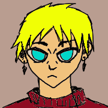
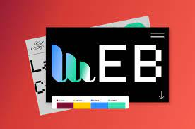

Hello
I'm a university student. Currently studying web development and python.
My Skill

My interest in web design come when I have my first computer. When I see website and learn about it, I know I want to create one for myself. 當我擁有第一台電腦時，我對網頁設計產生了興趣。 當我看到網站並了解它時，我知道我想為自己創建一個。 私が Web デザインに興味を持ったのは、初めてコンピューターを手にしたときです。 ウェブサイトを見てそれについて知ると、自分でも作りたいと思うようになります。
I'm good at soccer. My position is striker or midfield. 나는 축구를 잘해요. 내 포지션은 공격수나 미드필더다. 我擅長足球。 我的位置是前鋒或中場。 私はサッカーが得意です。 私のポジションはストライカーかミッドフィールドです。